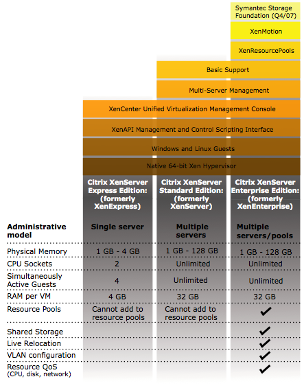

Mise en place de Xen
Contents
1 Introduction
Xen permet de faire tourner plusieurs systèmes d'exploitation (et leurs applications) de manière isolée sur une même machine physique sur plateforme x86. Les systèmes d'exploitation invités partagent ainsi les ressources de la machine hôte.
Xen est un « paravirtualiseur » ou un « hyperviseur » de machines virtuelles. Les systèmes d'exploitation invités ont « conscience » du Xen sous-jacent, ils ont besoin d'être « portés » (adaptés) pour fonctionner sur Xen. Linux, NetBSD, FreeBSD et Plan 9 peuvent d'ores-et-déjà fonctionner sur Xen.
Xen 3 peut également faire tourner des systèmes non modifiés comme Windows sur des processeurs supportant la technologie VT.
Avec les technologies Intel Vanderpool et AMD Pacifica ce portage ne sera bientôt plus nécessaire et tous les systèmes d'exploitation seront supportés.
Les architectures x86, x64, IA-64, PowerPC et SPARC sont supportées. Le multiprocesseur (SMP) et partiellement l'Hyper-Threading sont supportés.
Certains se poseront la question, pourquoi ne pas prendre la version XenExpress ou une version payante pour avoir d'autres fonctionnalitées ? A part pour avoir du support ça ne sert à rien si ce n'est d'avoir une jolie interface graphique pour gérer ses VM.
A mon avis, a part si vous gérer un parc de 100 machines physiques, je pense qu'il n'est vraiment pas nécessaire d'avoir la version payante. Voici les différences qui viennent du Citrix DataSheet (26/01/2008) :

La version que nous allons installer ci dessous, il n'y a aucunes restrictions et c'est gratuit :-). Parcontre vous allez passer plus de temps sur la configuration qu'avec un GUI, ça c'est sur ! Avous de voir ce dont vous avez réèlement besoin.
{kind=link}
2 Installation
2.1 32 bits
C'est très facile sous Debian d'installer Xen :
apt-get install linux-image-2.6-xen-686 xen-hypervisor-3.0.3-1-i386-pae xen-tools xen-linux-system-2.6.18-5-xen-686 linux-headers-2.6-xen-686 libc6-xen
Et si vous avez également besoin d'installer Windows, alors rajoutez ceci :
apt-get install xen-ioemu-3.0.3-1
2.2 64 bits
C'est très facile sous Debian d'installer Xen :
apt-get install linux-image-2.6-xen-amd64 linux-image-xen-amd64 xen-linux-system-2.6.18-5-xen-amd64 linux-headers-2.6-xen-amd64 xen-hypervisor-3.2-1-amd64 xen-tools xenstore-utils xenwatch xen-shell
Et si vous avez également besoin d'installer Windows, alors rajoutez ceci :
apt-get install xen-ioemu-3.0.3-1
3 Configuration
3.1 Noyau
Pour configurer le noyau, nous allons utiliser certaines directives pour nous assurer que dom0_mem ne prendra jamais plus de 512 Mo de mémoire. Ceci pour laisser tout l'espace disponible à nos domUs :
title Xen 3.0.3-1-i386-pae / Debian GNU/Linux, kernel 2.6.18-5-xen-686 root (hd0,1) kernel /boot/xen-3.0.3-1-i386-pae.gz dom0_mem=512m module /boot/vmlinuz-2.6.18-5-xen-686 root=/dev/sda2 ro console=tty0 max_loop=64 module /boot/initrd.img-2.6.18-5-xen-686
La directive "max_loop=64" nous garanti que nous n'allons pas manquer de loopback devices, massivement utilisés par Xen. Cette erreur est classique et se repère à ce type de message :
Error: Device 2049 (vbd) could not be connected. Backend device not found.
3.2 Modules
Nous allons également charger le module loop et le mettre à 64 comme ci dessus
| |
loop max_loop=64 |
3.3 Réseau
3.3.1 Configuration de l'interface
3.3.1.1 Interface Physique
Mettons en place une interface de bridge, /etc/network/interfaces :
auto eth0
iface eth0 inet static
address 192.168.0.90
netmask 255.255.255.0
gateway 192.168.0.248
auto eth1
iface eth1 inet manual
auto xenbr0
iface xenbr0 inet static
address 192.168.130.254
netmask 255.255.255.0
bridge_ports eth1
bridge_maxwait 0Nous bridgeons sur eth1 car nous ne disposons sur cette machine qu'une seule IP publique. Il est donc hors de question de bridger sur l'interface publique eth0. Il faudra créer une interface dummy0 (simuler) si vous ne possédez qu'une seule interface physique.
Il est d'ailleur fortement recommendé de créer une interface dummy pour éviter tous problèmes de POSTROUTING avec Iptables et ralentissements réseaux :
iptables -t nat -A PREROUTING -i eth0 -p tcp --dport 80 -j DNAT --to 192.168.0.3:80
Pour voir les bridges :
$ brctl show bridge name bridge id STP enabled interfaces xenbr0 8000.ee5ad8739af7 no vif0.0 peth0 tap0 vif6.0 vif31.0
3.3.1.2 Interface dummy
Modifiez le fichier /etc/network/interfaces :
auto eth0
iface eth0 inet static
address 192.168.0.90
netmask 255.255.255.0
gateway 192.168.0.248
iface dummy0 inet manual
auto xenbr0
iface xenbr0 inet static
address 192.168.130.254
netmask 255.255.255.0
bridge_ports dummy0
bridge_maxwait 0On peut vérifier ses bridges avec cette commande :
$ brctl show xenbr0 8000.1a87802de454 no dummy0 vif1.0 tap0
3.3.2 Mode Bridge
Le mode "Bridge" est mis en place par le script /etc/xen/scripts/network-bridge.
en voici le fonctionnement :
- Creation du nouveau Bridge "xenbr0"
- Arret de la "Vrai" carte ethernet "eth0"
- copie des adresses MAC et IP de "eth0" sur une interface reseau virtuelle "veth0"
- renomage de "eth0" en "peth0"
- renomage de "veth0" en "eth0"
- attachement de "peth0" et "vif0.0" sur le bridge "xenbr0"
- demarage des interfaces du bridge "xenbr0", "peth0", "eth0" et "vif0.0"
Pour activer le mode bridge, editez le fichier "/etc/xen/xend-config.sxp" et decommentez :
(network-script network-bridge) (vif-script vif-bridge)
Editez ce fichier /etc/xen-tools/xen-tools.conf et mettez ceci :
lvm = my_lvm_vg # Va utiliser un volgroup LVM pour créer les partitions à la volée debootstrap = 1 size = 5Gb # Disk image size. memory = 128Mb # Memory size swap = 128Mb # Swap size fs = ext3 # use the EXT3 filesystem for the disk image. dist = etch # Default distribution to install. image = full gateway = 192.168.0.11 netmask = 255.255.255.0 passwd = 1 kernel = /boot/vmlinuz-`uname -r` initrd = /boot/initrd.img-`uname -r` serial_device = hvc0
3.4 Linux
Pour créer une image avec debootstrap (Debian par exemple), utilisez le fichier /etc/xen-tools/xen-tools.conf. Quand vous l'aurez édité comme vous le souhaitez, vous pourrez créer l'image appropriée. Voici quelques exemples :
xen-create-image --hostname=vm03.example.com --ip=192.168.0.103 --netmask=255.255.255.0 --gateway=192.168.0.1 --dir=/vserver/images --dist=sarge --debootstrap
xen-create-image --debootstrap --hostname xen-etch --dhcp --dist=etch
xen-create-image --hostname=xen4 --size=3Gb --swap=128Mb --memory=512Mb --ip=172.30.4.155
3.5 Windows
Pour Windows, ne vous attendez pas à des perfs de malade niveau réseau et disques car tant que les PV drivers n'auront pas été libérés des versions commerciales (même la Xen Express), les perfs resteront pauvres (ex. réseaux : 1,5Mo/s Max).
Néanmoins, si cela vous suffit, insérez ceci pour créer un fichier de 4 Go :
dd if=/dev/zero of=/var/xen/images/WinXP.img bs=1M count=4096
Ensuite configurez ci dessous ce qu'il faut pour que ca fonctionne :
kernel = "/usr/lib/xen-3.0.3-1/boot/hvmloader" builder = 'hvm' name = "WindowsXP" disk = [ 'file:/mnt/disk1/Winxp/WinXP.img,ioemu:hda,w', 'file:/mnt/disk1/xp-sp2.iso,hdb:cdrom,r' ] device_model = '/usr/lib/xen-3.0.3-1/bin/qemu-dm' # cdrom n'est plus utilisé depuis XEN 3.02 cdrom = '/dev/hdb' memory = 512 boot = 'dca' device_model = 'qemu-dm' nic=2 vif = [ 'type=ioemu, mac=00:50:56:01:09:01, bridge=xenbr0, model=pcnet' ] sdl = 1 vncviewer = 0 localtime = 1 ne2000 = 0 vcpus = 1 serial = 'pty' # Correct mouse problems usbdevice = 'tablet' on_poweroff = 'destroy' on_reboot = 'restart' on_crash = 'restart'
Changez l'option vpcu en fonction du nombre de cores disponibles sur votre machine.
Il ne reste plus qu'a lancer l'install :
xm create /etc/xen/WindowsXP.cfg
3.6 BSD
kernel = '/usr/lib/xen-3.0.3-1/boot/hvmloader' builder = 'hvm' memory = '512' name = 'OpenBSD' device_model = '/usr/lib/xen-3.0.3-1/bin/qemu-dm' # Nombre de cartes reseaux nic = 1 # ne2k_pci n'est pas la plus rapide (RTL8139), mais fonctionne avec xBSD # Sinon la pcnet fonctionne également vif = [ 'type=ioemu, bridge=xenbr0, model=pcnet' ] sdl = 0 # L'output sera visible sur un serveur vnc sur son display 1 vnc = 1 vnclisten = '192.168.130.20' vncunused = 0 vncdisplay = 1 vncpasswd = '' # Pour disque physique : phy:/dev/mapper/exemple # Pour un fichier : file:/mnt/iso/exemples.iso disk = [ 'file:/root/test.img,ioemu:hda,w', 'file:/root/iso/cd42.iso,hdc:cdrom,r' ] boot = 'cd' on_poweroff = 'destroy' on_reboot = 'restart' on_crash = 'restart' acpi = 0 apic = 0
Pour les images disques, voici les formats supportés :
vvfat vpc bochs dmg cloop vmdk qcow cow raw parallels qcow2 dmg raw host_device
3.7 Options supplémentaires
Voici quelques options supplémentaires qui peuvent s'avérer très utiles...
3.7.1 VNC Server au boot d'une VM
Pour lancer au serveur VNC au boot d'une VM, rajoutez ces lignes dans votre fichier de conf de VM (ici : /etc/xen/WindowsXP.cfg) :
vnc = 1 vncviewer = 1 vncdisplay = 1 stdvga = 0 sdl = 0
Puis éditez /etc/xen/xend-config.sxp et rajoutez ceci :
# The interface for VNC servers to listen on. Defaults # to 127.0.0.1 To restore old 'listen everywhere' behaviour # set this to 0.0.0.0 (vnc-listen '0.0.0.0')
Vous aurez peut être besoin d'un package pour que cela fonctionne :
apt-get install libsdl1.2debian-all
3.7.2 Différents périphériques de boot
- Pour charger un disque dur qui se trouve dans une image pour Windows :
disk = [ 'file:/mnt/disk1/Winxp/WindowsXP.img,ioemu:hda,w' ]
- Charger un CD depuis un lecteur pour Windows :
disk = [ 'phy:/dev/cdrom,ioemu:hda,r' ]
- Charger une image ISO :
disk = [ 'file:/mnt/disk1/xp-sp2.iso,hda:cdrom,r' ]
hda : doit correspondre le udev de votre cdrom !
- Charger un CD depuis un lecteur :
disk = [ 'phy:/dev/cdrom,hda:cdrom,r' ]
hda : doit correspondre le udev de votre cdrom !
3.7.3 Limitations
Affection CPU : en plus/en mois :
Augmentation à chaud de la mémoire utilisée :
xm mem-max xen4 612 xm mem-set xen4 612
Il ne faut pas oublier de modifier le fichier de configuration du serveur virtuel qui contient également la taille de la mémoire.
3.7.4 Migration
Migration mémoire à partir du serveur source :
xm migrate -l xen2migrate xenhost_destination
4 Lancement d'une machine Virtuelle
Pour lancer une machine, rien de plus simple :
xm create -c /etc/xen/ma_xen.cfg
L'option -c sert à récupérer la main juste après l'exécution de celle-ci.
Si vous ne faites pas -c, vous pouvez récupérer une console comme ceci :
xm console le_nom_de_ma_machine_xen
Si on souhaites sortir de la console :
Ctrl + AltGr + ]
Ensuite on peut vérifier l'état :
xm list
5 FAQ
5.1 4gb seg fixup, process syslogd (pid 15584), cs:ip 73:b7ed76d0
Le noyau de l'invité, qui est un vserver maître, donne un certain nombre d'insultes. La solution est indiquée ici:
http://bugs.donarmstrong.com/cgi-bin/bugreport.cgi?bug=405223
Elle consiste en l'installation de libc6-xen et un mv /lib/tls /lib/tls.disabled sur les vservers invités.
5.2 Error: Device 2049 (vbd) could not be connected. Hotplug scripts not working
Ce message est obtenu au lancement d'un DomU (xm create toto.cfg). Une des causes peut être la non existence d'une des partitions du DomU. Si vous utilisez du LVM, vérifier que les volumes existent.
5.3 Error: Device 0 (vif) could not be connected. Backend device not found
C'est certainement parce que le réseau de votre Xend n'est pas configuré. Pour cela, remplacer dans votre fichier /etc/xen/xend-config.sxp la ligne :
(network-script network-dummy)
par
(network-script 'network-bridge netdev=eth0')
Ne pas oublier de relancer xend :
/etc/init.d/xend restart
5.4 re0: watchdog timeout
Voila tout ce que nous obtenions lorsque nous choisissions le driver NIC rtl8139 pour un domU NetBSD ou OpenBSD.
Finalement, c’est une réponse de Manuel Bouyer sur port-xen qui donne la solution :
Désactiver re* ! C’est alors rtk* qui prend la main, et là, point de timeout, de latences ou autres dysfonctionnement, “juste ça marche”.
6 Ressources
http://www.cl.cam.ac.uk/research/srg/netos/xen/readmes/user/
Documentation Xen
Paravirtualization avec Xen
Xen mise en place d'un serveur Parfait
Documentation Xentools (Xen-Shell et Argo)
Documentation XenExpress
Documentation Xen for Debian
How To Make Your Xen-PAE Kernel Work With More Than 4GB RAM
Xen et vserver : monitoring des VM sur une page PHP
Documentation on Heartbeat2 Xen cluster with drbd8 and OCFS2
XEN On An Ubuntu - High Performance
NetBSD Xen Guide
XEN et l’optimisation d’espace disque
Problématique de consolidation et atteinte des objectifs de niveau de service (SLO) avec Xen
How To Run Fully-Virtualized Guests (HVM) With Xen 3 2 On Debian Lenny
Xen Live Migration Of An LVM-Based Virtual Machine With iSCSI On Debian Lenny
Creating A Fully Encrypted Para-Virtualised Xen Guest System Using Debian Lenny